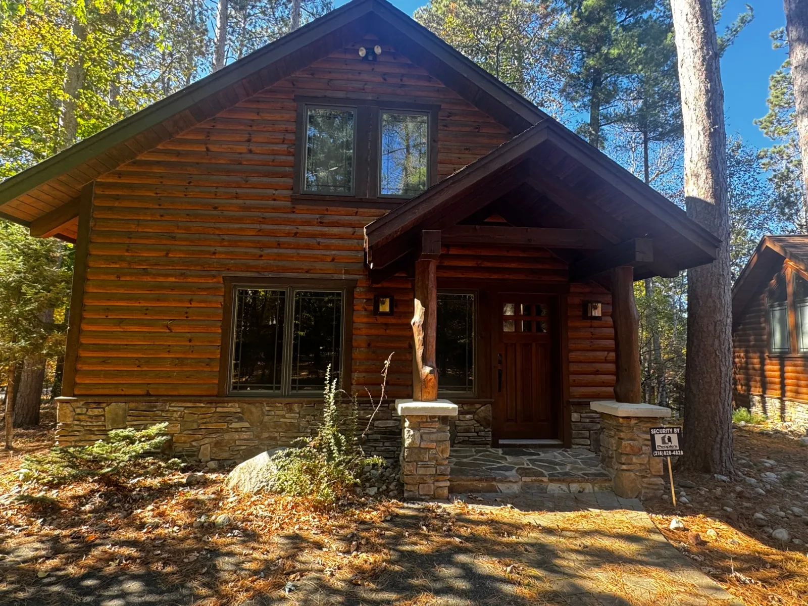
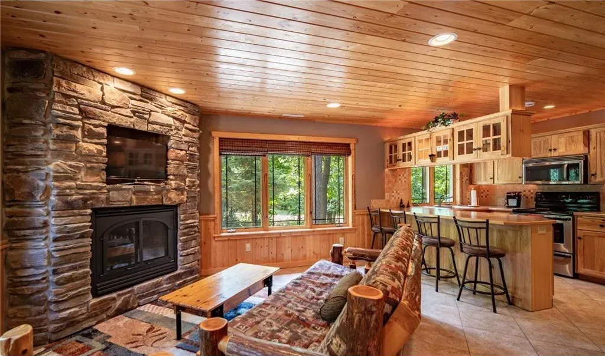
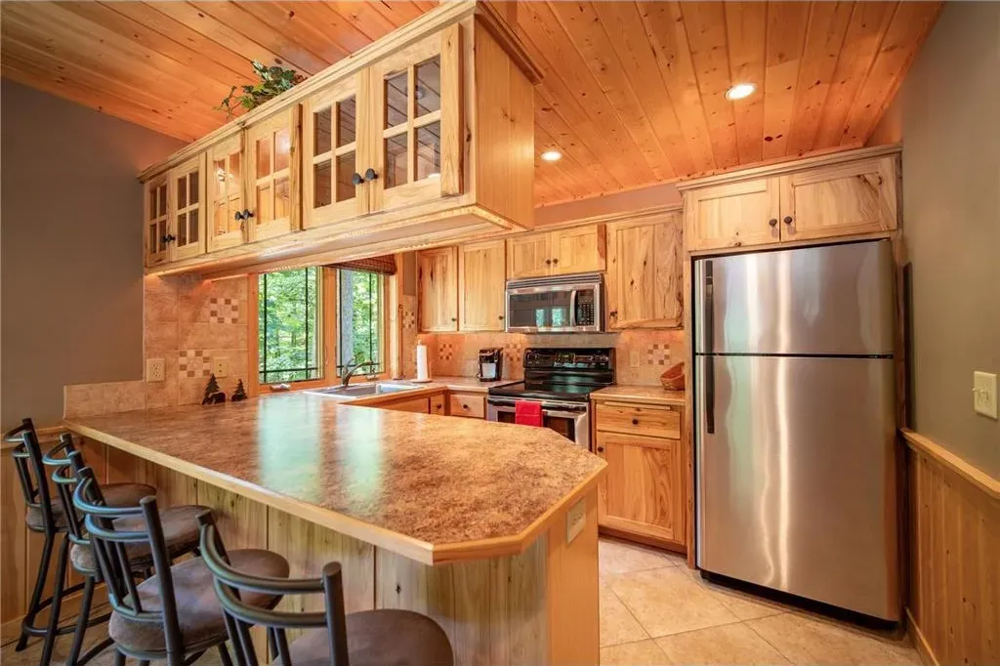
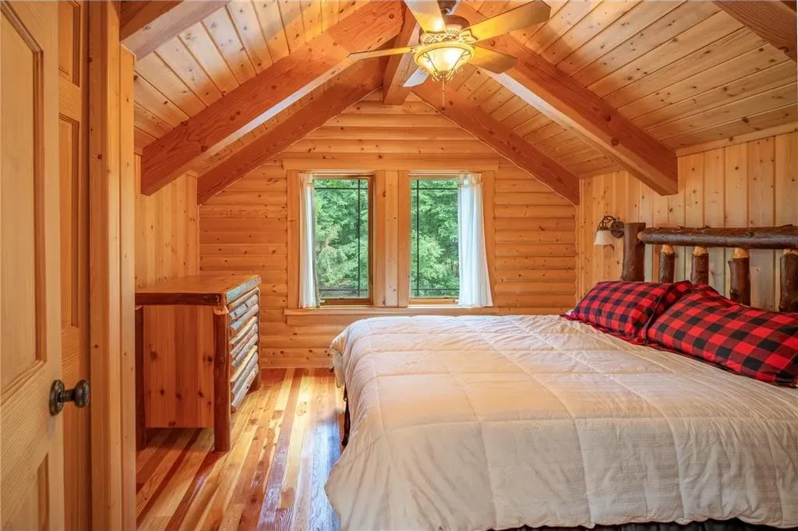
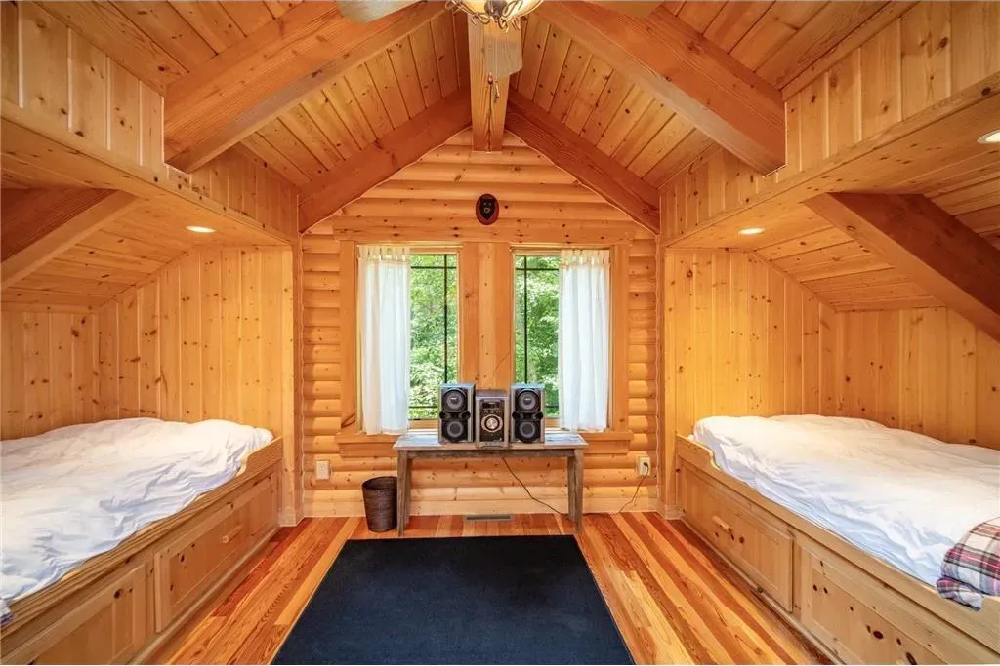
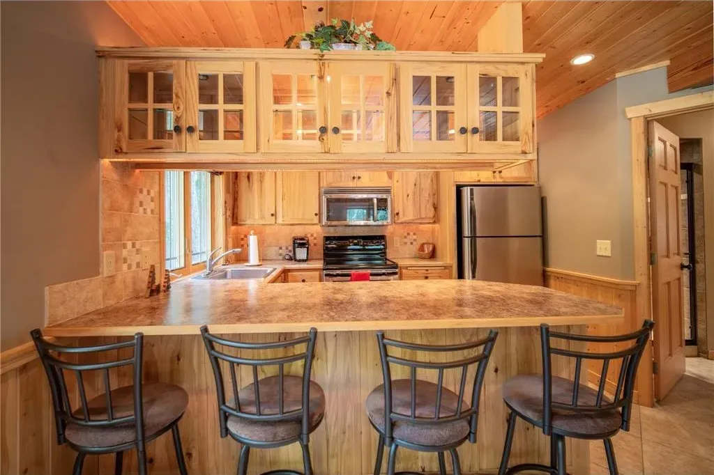
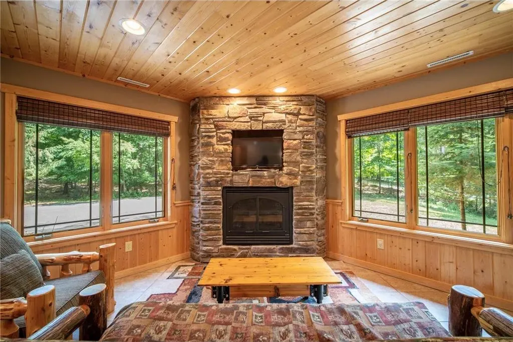
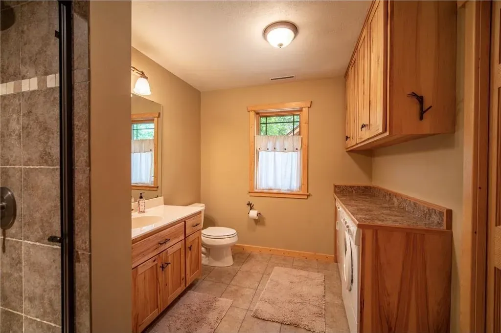
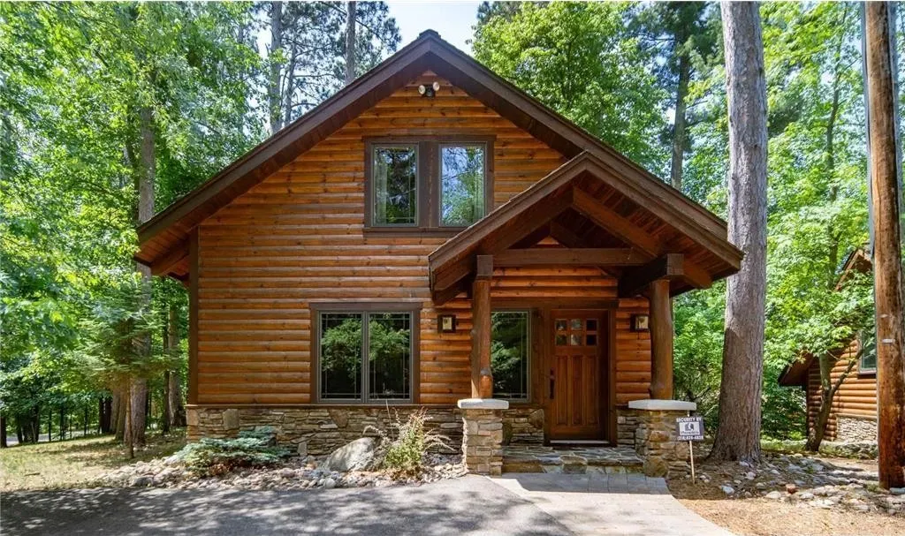

Crosslake Cabin
Big Trout Lake, Manhattan Point
A log cabin in the pines, a few steps from Big Trout Lake on Minnesota's Whitefish Chain. Light the gas fireplace, walk the 4-mile loop around Manhattan Point, and be in downtown Crosslake for dinner in ten minutes.
- Bedroom
- Private, with a queen bed
- Loft
- Two built-in bunks
- Bath
- One full bathroom
- Warmth
- Gas fireplace
- Water
- Steps to the lake and fire pit
- Connected
- WiFi and two smart TVs
The cabin
Mature pines, knotty-pine ceilings and a stacked-stone fireplace: this is classic Northwoods, with the comforts you'd want for a long weekend. The open main floor has a sitting area around the fireplace, a full kitchen and a dining bar with four stools, with big windows that keep it bright.
Upstairs is a private bedroom with a queen bed and a semi-private loft with two built-in bunks, a good setup for a family or two couples who don't mind sharing. One full bathroom is on the main level.








The area
Manhattan Point
The cabin sits on Manhattan Point, 3 miles from downtown Crosslake. A 4-mile paved loop runs right past the door, good for a morning run, an evening walk or a family bike ride through the pines.
Big Trout Lake
Big Trout is one of the deepest, clearest lakes on the Whitefish Chain. Walk down to the water's edge, light the fire pit and stay for the sunset.
Where we eat
- The Wharf. A bar and restaurant on the Whitefish Chain you can reach by boat or car, with sunsets from the dock.
- Moonlite Bay. A Crosslake favorite since 1933, with Pub '33 upstairs.
- Riverside Tavern. Scratch kitchen: steaks, fish and sandwiches.
- Maucieri's Italian Bistro. Family-run Italian. Closed Tuesdays.
- Norway Ridge. A supper club on Kimble Lake in Pequot Lakes since 1948, known for smoked ribs.
- Crosslake Coffee. Coffee and breakfast in town.
Skip the drive home: Less runs the Safe Ride bus around Crosslake for $20 a person. Call 218-316-0300.
Questions guests ask
Where exactly is the cabin?
On Manhattan Point on Big Trout Lake, part of the Whitefish Chain of Lakes, 3 miles from downtown Crosslake, Minnesota. It's about two and a half hours north of the Twin Cities. You'll get the full address and directions when you book.
What are check-in and check-out times?
Check-in is any time after 12:00 PM. Check-out is by 10:00 AM.
Is there a minimum stay?
Yes, two nights.
Who does the cabin fit?
A private queen bedroom plus a loft with two built-in bunks suits a family or two couples. There's one full bathroom.
How close is the lake?
A few steps. Head down to the water's edge on Big Trout Lake, where there's a lakeside fire pit.
Is there WiFi and TV?
Yes. Free WiFi and two HD smart TVs.
Where do I see prices and open dates?
On Airbnb or Vrbo. Both show live availability and the full price, including the cleaning fee, before you book.
Book your stay
See open dates and prices, and book on the platform you already use.
Questions before you book? Call or text Chad at 612-991-2604.